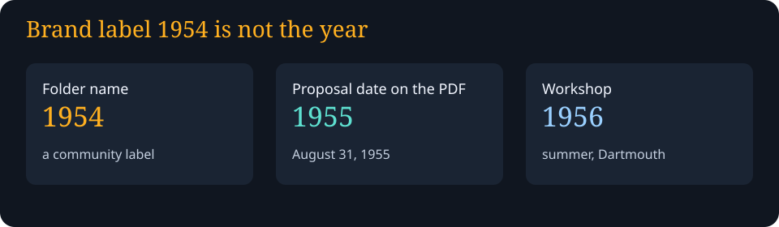
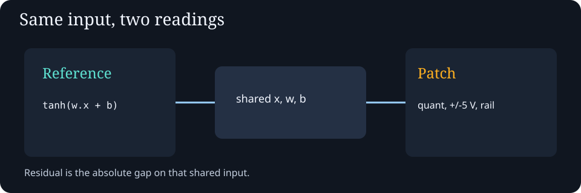
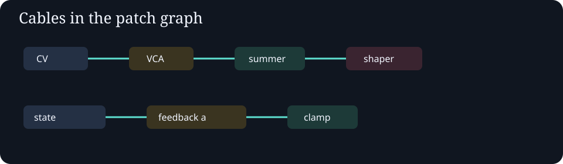
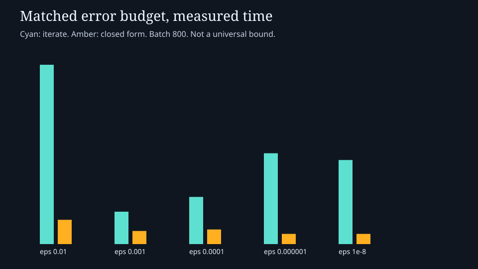

Reference
Float64 tanh(w·x+b). No knob step and no rail.
y =
Public educational CPU simulation · folder name awesome-ai-symposium-synthesis-1954
The folder name is a brand label. The archived Dartmouth proposal PDF prints August 31, 1955. The workshop was the summer of 1956. Warren Weaver is not treated here as a 1955 proposal co-author.



Float64 tanh(w·x+b). No knob step and no rail.
y =
Same x, w, and bias, then knob step, × volts, rail, ÷ volts, tanh.
y =
residual =
saturated =
mode =
endpoint =
Same α, c, x0, steps. Tolerance and the labels differ.
endpoint =
residual =
closed form applies =
Squared error of tanh(w·x) against a fixed target. Freeze stops updates. The trace is allowed to get worse.
verdict =
initial = final =

{}